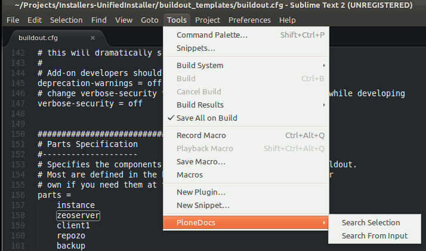
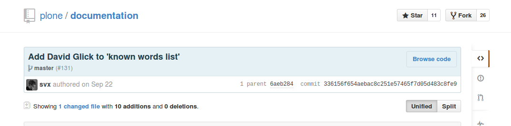

Cultural Learnings of Documentation for Make Benefit Glorious Nation of Plonistan
Paul Roeland & Sven Strack
Plone Conference 2014, Bristol
It's 2014, people...
If you still think documentation is about "how stuff works"
You're doing it wrong
Documentation
≈
Code
for new users, decision makers, interested people
(a.k.a. future clients & future community members)
Shocking, isn't it?
But wait, there's more reasons to write docs..
Your future self
“You will be using your own code six months from now.”
Eric Holtscher,
#writethedocs
and even if you want to be bad
Of course you're all way too nice to use Four Letter Words.
but we've all thought about a few
RTFM anyone?
To point people to a Fine Manual,
there has to be a Fine Manual
If people don't know why Plone exists
they won't use it
If people can’t figure out how to install Plone
they won't use it
If people can’t figure out how to use Plone
THEY
WON'T
USE
IT
btw...
thanks, Hedy Lamarr
for spread spectrum,
the wifi,
... and the fabulousness
Now for the good stuff...
Much has already been done
Let's do some quick time-travelling...
A year ago...
in Brasília
a plan was born
To stay forever on the beach
oh... wait
ehm, to unify all Plone documentation
A robot master, a documenter, a marketeer and 9 others walk into a bar...
(actually, it was more an office)
but still, much was achieved, thanks to a wide variety of people
Thanks, Sisi Nutt!
After a lot of productive discussions...
... and some more sprints...
the new docs.plone.org was born
Reality Check:
#WriteTheDocs conf
“Never use a long word
where a short one will do”
George Orwell
so now
we want MORE
better
nicer
easier
shinier
sweeter
So many choices...
So this goes for all you add-on authors too!
Audiences
Define them (however broadly)
and structure your docs accordingly
Introductions
Soft landings are important
Each chapter needs a landing page,
so people can see if this is what they were looking for
Tone
Friendly & professional go a long way...
Consistency
- Don't leave your readers hanging...
- ... nor your contributors
- Always use the same terminology
- Follow (or write!) the styleguides
- Use concise, simple paragraphs
... hang on, we know this stuff!
Beautiful is better than ugly.
Explicit is better than implicit.
Simple is better than complex.
Complex is better than complicated.
Readability counts.
In the face of ambiguity, refuse the temptation to guess.
There should be one-- and preferably only one --obvious way to do it.
Now is better than never.
Versioning
Different software versions need different docs
Which has as great benefit:
You can gracefully retire the old!
Language
Spellcheck is a wonderful invention
as are grammar tools.
They're like “lint” for natural language ;-)
Humor
- It's a double-edged sword
- Highly culturally charged
- Gets old quickly, docs are meant to last
- So maybe not.
Sarcasm
is never a good idea in docs.
nor IRC, for that matter
Test!
testing is essential
not only for correctness in formatting
but also as in does my audience get it?
SCIENCE, people!
Want tools?
- Search docs right from Sublime
- Integrated search in Chrome, Firefox, DuckDuckGo, ...
- Dash (OS X) & Zeal (Win/Linux)

Quality control
- robot screenshots
- Docker & friends deployment
- Continuous Integration
- automated spellcheck
which doubles as a nice Kudo system ;-)

so now we come to:
The Challenge...
If this is your
feeling as a dev...
(OH GOD I'M BORED)
Get to work...
All skills & all skill levels welcome!
New staff? Ask them to document their journey!
Speaking in tongues? Help translate!